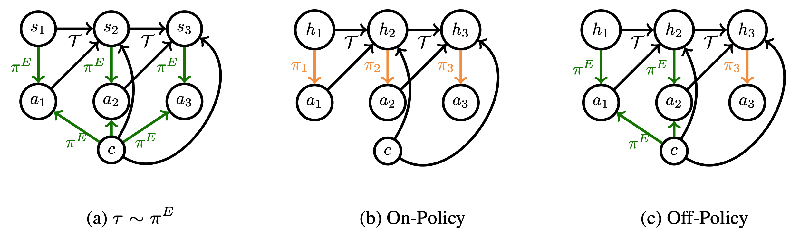
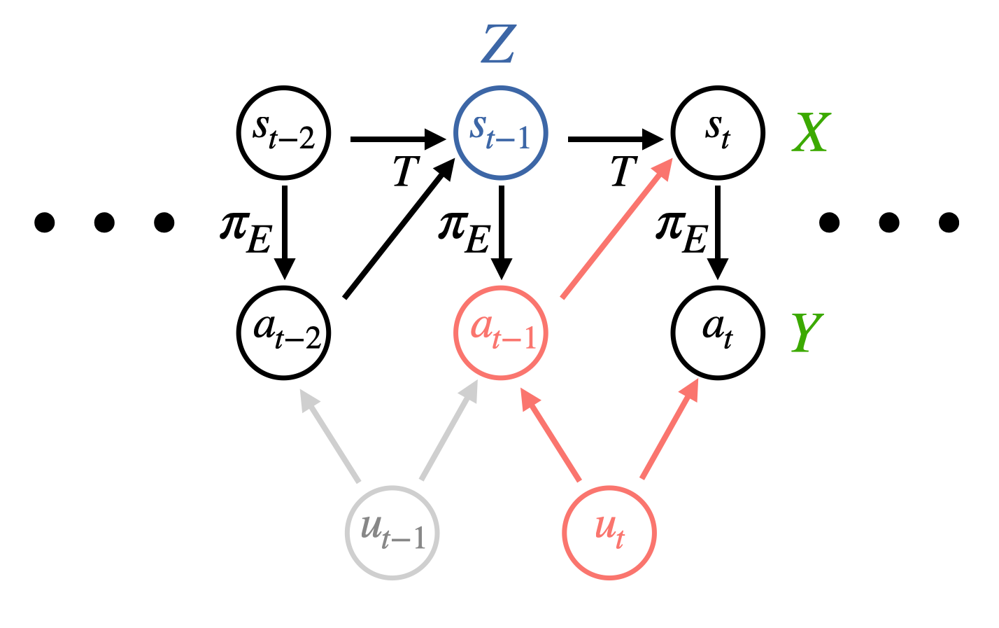

Frequently, an imitation learner might not have access to all the information an expert was using to make decisions. We prove that under certain identifiability conditions, training a sequence model policy via on-policy training is both neccesary and sufficient to match expert performance. Furthermore, we show that both in theory and practice, off-policy training of sequence models can lead to a "latching effect," in which an imitation learner just repeats its own past actions.
Abstract
We consider imitation learning problems where the learner’s ability to mimic the expert increases throughout the course of an episode as more information is revealed. One example of this is when the expert has access to privileged information: while the learner might not be able to accurately reproduce expert behavior early on in an episode, by considering the entire history of states and actions, they might be able to eventually identify the hidden context and act as the expert would. We prove that on-policy imitation learning algorithms (with or without access to a queryable expert) are better equipped to handle these sorts of asymptotically realizable problems than off-policy methods. This is because on-policy algorithms provably learn to recover from their initially suboptimal actions, while off-policy methods treat their suboptimal past actions as though they came from the expert. This often manifests as a latching behavior: a naive repetition of past actions. We conduct experiments in a toy bandit domain that show that there exist sharp phase transitions of whether off-policy approaches are able to match expert performance asymptotically, in contrast to the uniformly good performance of on-policy approaches. We demonstrate that on several continuous control tasks, on-policy approaches are able to use history to identify the context while off-policy approaches actually perform worse when given access to history.
Video
Key Insights
1. Dangers of TCN in Imitation Learning
The core reason TCN is dangerous is that it introduces spurious correlations in the recorded actions that do not have their true cause in the recorded state. When TCN from a past step travels through the dynamics to influence the next state, the next state and next action are also spuriously correlated. This breaks a cardinal assumption of regression as both the inputs (states) and targets (actions) are affected by the same noise, rendering standard imitation learning approaches inconsistent. This manifests as the learner trying to reproduce the TCN, which compunds with the TCN at test time to lead to poor performance. For example, if a quadcopter flight demonstration is perturbed by TCN in the form of wind, the learner might attempt to swerve as much as the expert did, which would lead to even more swerving due to the continued influence of the wind!
2. Instrumental Variable Regression
While a queryable expert would be able to give us action labels that are not affected by TCN, this is not a realistic assumption for many domains. We instead focus on learning from observational data in the form of collected expert demonstrations. We build upon a technique from econometrics known as instrumental variable regression to denoise the inputs to our regression procedure. To do this, one conditions on an instrument $Z$: a source of random variation independent of the confounder (the shared noise between $X$ and $Y$). Graphically,

Mathematically, instead of regressing from $X \rightarrow Y$, one regresses from $X|Z \rightarrow Y|Z$. We present a unified deriviation of modern IVR techniques and derive performance bounds for them in our paper.
3. Two Algorithms for Imitation under TCN
The natural question at this point is how to apply IVR to the imitation learning problem. Our key insight is that we can leverage past states as an instrument as they are independent of future TCN! Graphically,
In math, we minimize $\mathbb{E}[\mathbb{E}[(a_{t} - \pi(s_{t})|s_{t-1}]^2]$ instead of $\mathbb{E}[(a_t - \pi(s_t))^2]$ like usual. We derive two algorithms for doing so efficiently with strong performance guarantees:
DoubIL: One first runs behavioral cloning, plugs in the proposed actions into a simulator to get fresh state draws, and then regresses from these fresh states to the recorded expert actions. Enjoys performance bound $J(\pi_E) - J(\pi) \leq c(\sqrt{\epsilon} + \sqrt{\delta})\kappa(\Pi)T^2$.ResiduIL: A purely offline algorithm that has the learner minimize an instrument-weighted residual with the weighting being chosen by an adversary. Enjoys performance bound $J(\pi_E) - J(\pi) \leq c\sqrt{\epsilon}\kappa(\Pi)T^2$.
We emphasize that standard IL algorithms like behavioral cloning have no such performance guarantees under TCN. We implement both algorithms in PyTorch and test them out on environments from the PyBullet suite. We find that we are able to significantly outperform behavioral cloning at matching denoised expert actions, cumulative reward, and generalizing to different noise distributions. We release our code below.
[Code]
Paper
Sequence Model Imitation Learning with Unobserved Contexts
Gokul Swamy, Sanjiban Choudhury, J. Andrew Bagnell, Zhiwei Steven Wu
@misc{swamy2022sequence,
title = {Sequence Model Imitation Learning with Unobserved Contexts},
author = {Gokul Swamy and Sanjiban Choudhury and J. Andrew Bagnell and Zhiwei Steven Wu},
year = {2022},
booktitle = {Advances in Neural Information Processing Systems},
volume = {34}
}Acknowledgements
This template was originally made by Phillip Isola and Richard Zhang for a colorful ECCV project, and adapted to be mobile responsive by Jason Zhang. The code we built on can be found here.